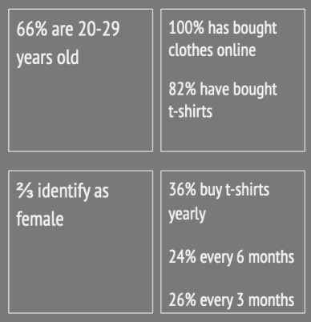
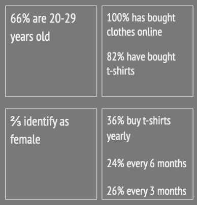

Basic UX
The theme Basic Web revolved around learning the basics of HTML and CSS and Adobe Photoshop, Illustrator and Xd. It included three main assignments which became increasingly difficult with each one having additional requirements.
The usage of proper semantic HTML became the first topic since it is the structure of every webpage. It didn’t take very long to get a good grasp of the markup language but the same can not be said of CSS.
Changing colours and positioning elements are the basic tools of CSS and fairly easy to understand. But styling a webpage can get much more complicated than that.
The basics of Photoshop, Illustrator and Xd are also important to know since it is the web designer’s “holy trinity”. Editing images in Ps, creating logos in Ai and designing whole webpages in Xd.
Data Collection
I learned quite a lot from various methods of collecting data, like observation, desk, interview and survey research.
Observing people’s t-shirt trends and age groups was quite useful even though it might be something you would already have known by walking down a street on a warm day.
Anything can be found by doing desk research but it’s up to you to know where to look, not every source on the internet can be trusted or relevant. By searching the internet I found a lot of information on what kind of print on a t-shirt was trendy, but when it came to fabric and brands in relation to age and gender, not so much.
Surveys are very helpful in getting a lot of data in a short time. It is limited to the questions you include but it confirmed some of my findings from the observation research.
Interview research takes longer time to conduct but it gave me similar results to the survey in more detail.
 

Early Prototypes
After having compared notes and ideas with my group, we sketched up a prototype of the website. We combined our ideas together that would solve problems we found in our research. We made it into a paper-prototype and tested its functionality with people. It gave us valuable information on how to improve the design even better.
We also made a storyboard which gives an example of how a user would find the website and use it.
Solution
In our research we found out that interest in second-hand clothing is on the rise. Most stores selling used clothes are physical and can it become a hassle to find what you need. We decided to make a webshop with second-hand t-shirts only, that has an easy-to-use filtering and search system. We decided to target early teenagers to people in their twenties who often have a limited budget. It will allow them to shop for less while helping the environment.
Link to final design